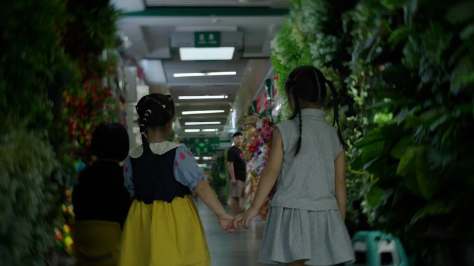

01 / FEATURE DOCUMENTARY
Goodbye, Yiwu (wt)

Logline:
After 18 years apart from her mother, Lecun returns to Yiwu, her childhood wonderland and the world’s largest market, to capture a panorama of women’s lives behind global trade. As she uncovers the hidden sacrifices of motherhood, she must also confront the truth behind her own left-behind childhood.
Supported By:
- 2026-27 Firelight Documentary Lab
- 2026 CNEX Chinese Doc Forum 17 | IFG 6
Winner of AIDC Award and IFG Best Potential on Impact Making First Prize - 2026 FIRST International Film Festival Documentary Lab
西宁FIRST青年电影节 纪录片实验室 - 2026 A-Doc Allies Program
- 2026 Fusion Film Festival Docs in the Works
Winner of Best Pitch Award
Stills:
Pick up a print. Keep looking.
Use the move handle to drag a print. Arrow keys move it, Shift makes larger steps, and Escape resets it. Select the photo to enlarge it.